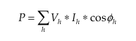

Hi,
I'm pretty green on the code side but my project needs to measure a current between about 1 and 60amps (normal run current, then detect when it drops a small percentage set by the user (maybe 10%). so i'd like to have better resolution
So what I have now is the adc scaled 60A of the 1024 adc counts which makes about 60mA steps, when running at the low end of the normal run current of 1 A i'm looking at about 6% steps so not very good.
I was hoping to improve the resolution of the adc counts by switching the vref to 1.1v when the readings were low.
Biasing the ct with Aref/2 instead of vcc/2 so when we switch to 1.1v we move with it.
this code does that:
if (ledState == LOW) //just using this to test
analogReference(INTERNAL); //1.1V BAND GAP
else
analogReference(DEFAULT);//AVCC 5V
(take care with this I think I killed an arduino by tieing Aref to vcc then telling it to go to 1.1v internaly)
I had to comment out the code below in the library as it was setting the admux values which analogReference() sets.
In emonlib.cpp:
#if defined(__AVR_ATmega168__) || defined(__AVR_ATmega328__) || defined (__AVR_ATmega328P__)
ADMUX = _BV(MUX3) | _BV(MUX2) | _BV(MUX1); //_BV(REFS0) |
I'm struggling to understand the readVcc function as this sets the admux to 1.1v but I think It may need to do it to calibrate, about here I get in over my head.
Even with the above commented out theres something else in the library setting it to external or something wierd as I see it going to 0v in a periodic way on the scope when in 1.1 and 5v modes, I guess this may not matter, better to just do it when I need it than to stop every thing else touching it, again I'm over my head.
Any ideas? It would be a great update for your library although may make calibration a bit more involved ?
Re: Auto scaling Vref
I'm struggling to understand the readVcc function as this sets the admux to 1.1v but I think It may need to do it to calibrate, about here I get in over my head.
Yes, it sets the reference voltage to AVCC and then measures the 1.1V band gap voltage. The intent is to determine the current Vcc (useful in battery operated situations where Vcc might slowly be declining). There's more detail in the last posting in this thread: http://openenergymonitor.org/emon/node/2522
[Robert, how do you manage to generate links to specific replies in threads?]
theres something else in the library setting it to external or something wierd
Others here are more familiar with the library than I am, but I think the standard library just uses the analogRead() function and leaves the reference alone (apart from the setting you found in readVcc()). If you're using the continuous monitoring sketches then I believe they bang on the ADC h/w registers directly.
I see it going to 0v in a periodic way on the scope when in 1.1 and 5v modes
Is it possible you're dragging it down with whatever you've connected to it in order to build your moveable mid-rail? It's a very high impedance source and is only really exposed to the outside world so you can decouple it with a cap to GND. If you put any load on it (or any noise on it) you'll change it, which will mess up your conversions.
And speaking of that decoupling cap (typically 100nF in most designs) it can take a long long time to charge up or discharge after you switch from one reference to another (again because of the high source impedance of that signal) so you want to avoid doing any conversions until it's settled.
Re: Auto scaling Vref
Yes I know it's high impedance, and that may cause more issues. I was thinking about doing it with external resistors and pull down controlled by the arduino to shift the Aref(external mode), and Aref/2 if this is not accurate
For this testing I have just the scope on Aref and the cap. The periodic pulse to 0 on Aref is something in the libarary when I get rid of all emon libarary and functions and just use an analog read it's not there.
I don't understand the sampling, averaging and calibration is there documentation on this?
Re: Auto scaling Vref
I'll be interested to hear what sort of thermal stability you get with your resistor plan.
I can't think of anything obvious for your AREF 0 pulse. Assuming you've knobbled readVcc() I can only find calls to analogRead() in the library and they should behave just like your direct calls to analogRead(). Does the frequency and duration of the pulse give any clues? You might just have to start adding calls back in and seeing which bit of code cause the pulse. How big is the cap?
Yes, there's plenty of good detail in the Building Block section.
Re: Auto scaling Vref
There's an Atmel app.note on which the emonTx is based that uses a 1.1 V reference, it is probably worth reading that.
Re: Auto scaling Vref
Whenever I've tried using the 1.1V internal reference, the results have been less good than when using the normal mid-rail arrangement for Vref. The maths does a superb job at extracting small amounts of 50Hz signal from the background noise. Providing that your current sensor is scaled such that the max signal (60A) covers most of the ADC's available range, I would expect to see good performance at the 1A level too.
My diverter boxes have a working range of around 4kW, yet the power that is consumed by a 40W bulb is recorded surprisingly well too. The reported difference between a 40W and a 60W bulb will always be around the 20W mark.
This level of performance is only possible when measuring both voltage and current to obtain "real power". When individual V & I readings are multiplied together, any errors in the first half of each mains cycle will tend to be offset by those in the second half. However, when calculating "apparent power" or RMS current, the performance is considerably worse at low signal levels because all such errors are squared.
Re: Auto scaling Vref
The maths does a superb job at extracting small amounts of 50Hz signal from the background noise.
Yes, there's nothing quite like multiplying a signal by a pure sine wave to filter away all the other frequencies. That all comes down to sin(x) being orthogonal to sin(nx) where n is an integer greater than 1, i.e. their dot product will always be zero.
You can take a 1A 50 Hz sine wave, and add in a 200A 150 Hz sine wave. Once you multiply their sum by the 50Hz voltage sine wave, the 200A signal vanishes. All those harmonics make a big difference to Irms but none at all to real power.
For those that prefer to think of real power in the frequency domain, it's defined as:

but since Vh = 0 for h > 1 all the terms in that sum bar the first go to zero, so it doesn't matter how big the amplitude of the harmonics are, they get multiplied by 0 and disappear. All of this of course assumes your V is a pure sine wave... closer to true for some of us than others. The more distorted your V, the more you end up getting charged for your harmonics in I because they start to find something non-zero to multiply by.
But it sounds like pas940 is interested in measuring current not power, in which case all those harmonics do matter and need to be included.
Re: Auto scaling Vref
I take it you've seen the 'flat-topping' we get in the UK...
Here's what Fourier says we have:
It's bound to vary across the country, my understanding is it's all the little rectifier power supplies acting collectively, but Robin's graphs (75 miles from me in a straight line) show very much the same shape.
Re: Auto scaling Vref
Indeed it was you I had in mind when I wrote:
All of this of course assumes your V is a pure sine wave... closer to true for some of us than others. The more distorted your V, the more you end up getting charged for your harmonics in I because they start to find something non-zero to multiply by.
Although I hadn't realised it was that way across the country, I'd assumed it was a single datapoint from your house / 'hood and so not necessarily indicative of the country. I've shown one of your graphs to a few power engineers here and they questioned whether it would even pass our grid standards. I think we have pretty tight THD limits on grid V, although I haven't been able to find out what they are. I take it the UK doesn't? Effectively you're getting charged for current harmonics that I get for free, although it would be interesting to see by how much. Are you able to do an FFT on your voltage wave please? I guess the misshapen V signal will have a corresponding effect on the I signal. Does the V distortion vary much throughout the day?
I didn't bother to implement a Voltage FFT in my monitor (perhaps I should) but I can FFT the Current signal flowing through each breaker, so I just switched on about 800W worth of incandescent bulbs and asked it to plot the signal. You can see just a smidge of a flatop, but very little shows up in the FFT. Then for kicks I did the same with about 130W worth of compact fluros turned on, where you can see the harmonics all the way up to 2kHZ before I run out of bandwidth.
Re: Auto scaling Vref
Thanks for the FFT. I'm not sure it's hugely worse than ours, just looks worse in the pics for some reason.